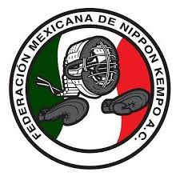
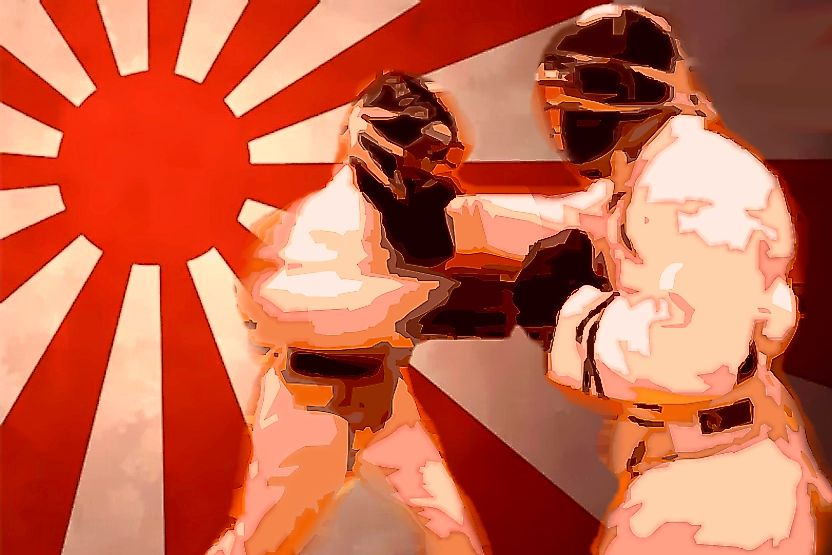
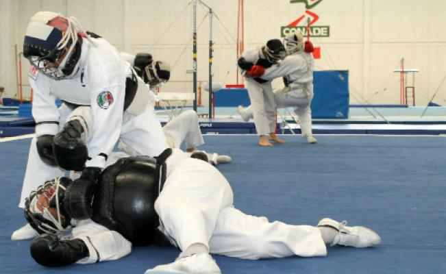
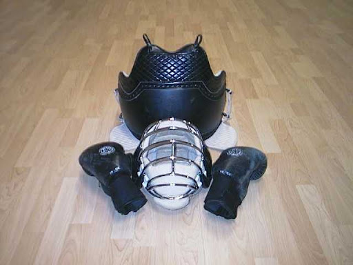

Formulario de consultas al gimnasio:
Registro | Consulta
Arte Marcial Practicada:
Nippon Kempo
Arte Marcial Practicada:
Nippon Kempo
El Nippon kempo ("nihon kenpo"-日本拳法- escrito en japonés) es un arte marcial japonés derivado del Sumai una técnica antigua de la que proviene el Sumo actual entre otras, una de las más mortíferas y eficaces artes marciales. Inicialmente se creó con la finalidad de preservar la defensa y ataque en un combate real, pese a que muchas disciplinas omitían los golpes reales en sus combates se hizo con el fin de ser un estilo usado ampliamente .
Lema
"Nippon Kempo (nihon kenpo), es un camino de superación personal, para crecer como ser humano y ser más fuerte. No sólo física, sino también espiritualmente, encontrando así armonía con uno mismo y el universo."
¿Que se practica?
En los combates de Nippon Kempo se denota la contundencia y la utilización de todo tipo de técnica marcial: golpes, patadas, rodillas, llaves, proyecciones, pelea en el suelo, sumisión, etc.

Equipacion
En ésta disciplina es la armadura o Bogu la más destacada de sus características ya que gracias a este es posible desarrollar un entrenamiento y combate sin que los practicantes sufran lesiones graves o permanentes (peto, careta, guantes especiales(bogu).
